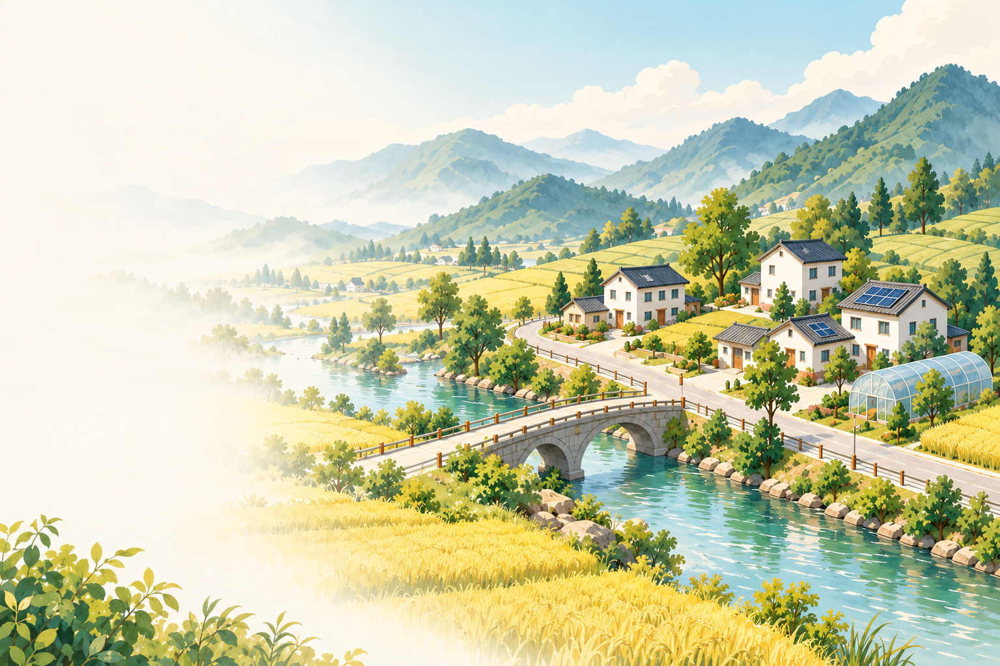

乡村场景概念插画02 / 成长之路
从泥巴路，到振兴路
一座村庄的成长
也是每个人的生活向前一步
第一篇章 · 破局与希望
先让路通起来，让灯亮起来。
从走访村民开始，修建通村公路、接通安全饮水与电网，改善住房条件，培育第一个稳定增收的产业。把每一项建设，落到每一户人家的日常里。
青山村的一天 · 人物概念插画

乡村场景概念插画02 / 成长之路
一座村庄的成长
也是每个人的生活向前一步
从走访村民开始，修建通村公路、接通安全饮水与电网，改善住房条件，培育第一个稳定增收的产业。把每一项建设，落到每一户人家的日常里。